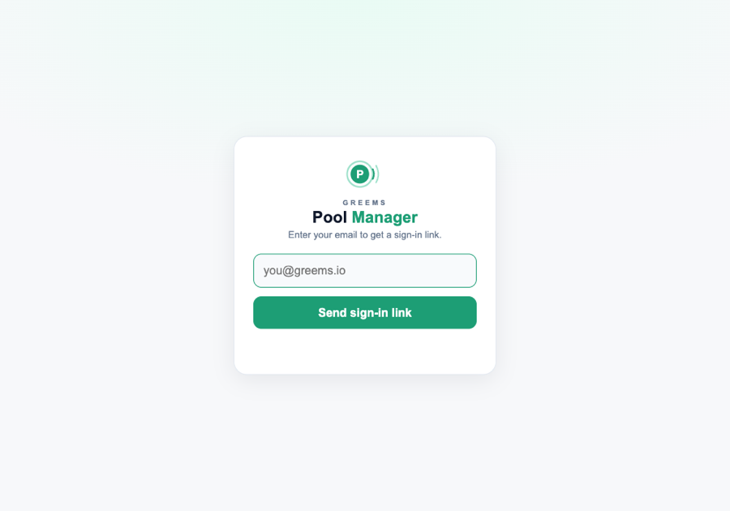
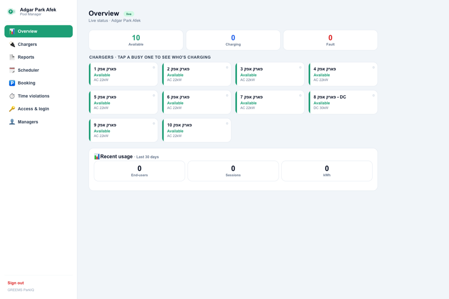
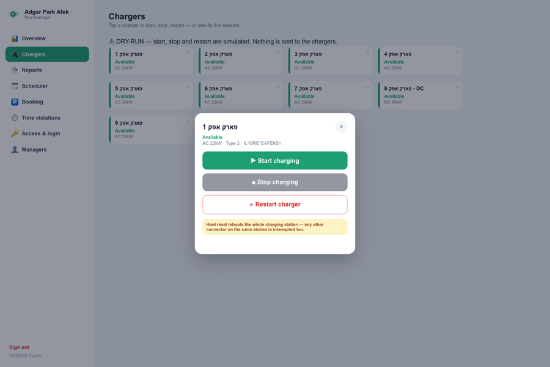
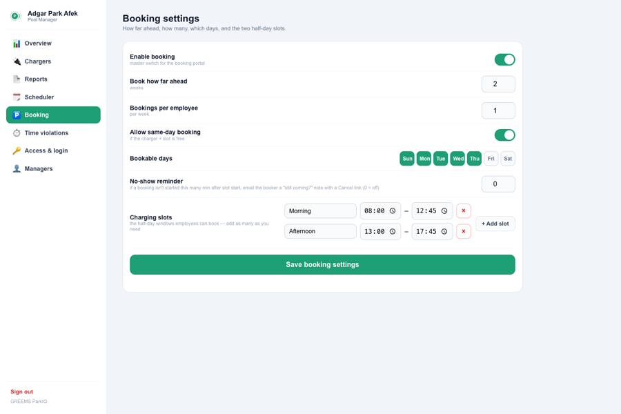
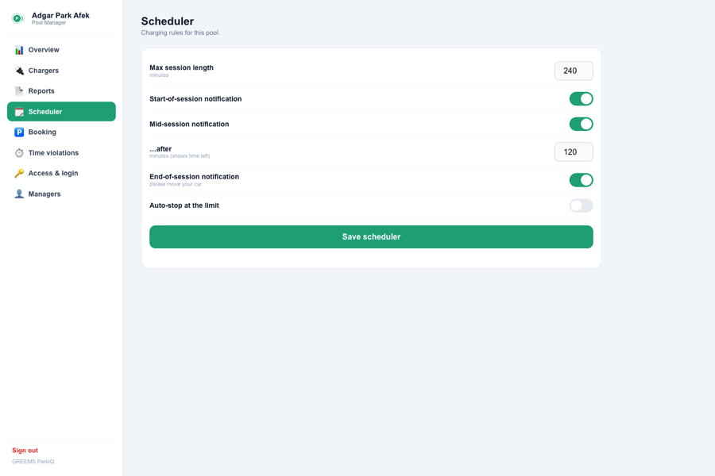
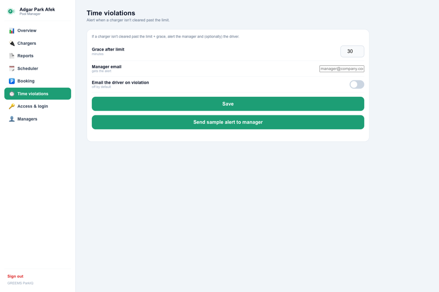

You own the chargers and your staff charge for free. With fewer bays than drivers, ParkIQ keeps them moving — live status, hands-on controls, advance booking and fair-use limits — so everyone gets a turn. The manager view is built for a laptop; the employee app is mobile-first.
🔌Your chargers, free for staffNo payments, no billing — this is about access, not money.
📅Book ahead, fair by designEmployees reserve a time slot, so a charger is waiting — no circling the car park.
🎛️Hands-on controlStart, stop or restart any charger, and see exactly who’s plugged in right now.
1
Sign in
Sign in with your work email — no password, no waiting.
Open the manager portal on your laptop.
Enter your @corporate.com email.
You're in — approved emails sign in instantly.no email link
You decide who gets in. Approve a whole company domain, import a list of specific addresses (or upload an .xlsx), or both — and choose instant sign-in or a one-tap email link for extra verification. A separate Managers list controls who can open this manager view; everyone else gets the employee app.
Or let employees sign in with their Microsoft work account (Entra ID / Azure AD) once your IT team sets it up. Managers always keep the email sign-in too, so a directory problem never locks you out — Microsoft proves who someone is, the pool still decides who's approved.
Someone without their work email on their phone? Turn on Email + password sign-in on Access & login — it's an extra option alongside the email link, never a replacement. People register once with an approved address and a password (8+ characters, a number and a special character), then sign in from any device without an email round-trip. The email link always keeps working too, for everyone, and managers keep it regardless of this setting.

2
Overview
Your month at a glance — active users and energy delivered — right above the live bays.
36
End-users
147
Sessions
3,671
kWh
Rolling last 30 days · example figures. A left sidebar switches between Overview, Chargers, Reports, Scheduler, Booking, Time violations, Access & login and Managers.

3
Live bays & controls
See which chargers are free, busy or need attention — and act on any of them in a tap.
AvailableChargingFault
Example — live grid
Bay 01
Available
Type 2 · AC 22kW
Bay 02
Charging
Type 2 · AC 22kW
Bay 03
Available
Type 2 · AC 22kW
Bay 04
Fault
Type 2 · AC 22kW
Bay 05
Available
Type 2 · AC 22kW
Bay 06 · DC
Charging
CCS2 · DC
▶️StartKick off a charge on any free bay.
⏹️StopEnd whatever session is running on a bay — even a walk-up.
🔄Restart — soft or hardSoft reset first (recommended — try this before anything else); Hard reset (full power cycle) only if soft doesn't clear it — a hard reset reboots the whole station, so any other connector on it is interrupted too. You're asked which before it fires.
👤Who’s chargingTap a busy bay to see the driver, start time, kWh so far and current power.
Chargers show their real name (e.g. “Bay 06”) and speed (e.g. AC 22kW), never an internal ID. The grid auto-refreshes (~30s) and appears on both the Overview and Chargers screens.
💡 Tip: A charger stuck “in use” after someone unplugged? Open it and hit Stop — or a Soft reset, then Hard reset if it still won’t clear.

4
Booking
Let employees reserve a charger in advance, so a bay is guaranteed when they arrive — and no one hunts for a free spot.
🗓️Time slotsDefine as many slots as you need — e.g. Morning, Noon, After Noon & Night. Add, rename or remove them anytime.
📆How far ahead & how manySet the booking horizon (days/weeks), which weekdays are bookable, whether same-day is allowed, and how many bookings each employee gets per week.
🔔No-show reminderIf a booked charge hasn’t started N minutes into the slot, ParkIQ emails the booker “still coming?” with a one-tap Cancel link — freeing the bay for a colleague. Nothing is ever cancelled silently.
Turn booking on with a master switch. Employees book from the app; only the person who booked can start that charger during their slot.
💡 Tip: This example uses four slots (Morning / Noon / After Noon / Night). Add more only if demand needs finer turns.

5
Scheduler
Set fair session limits and reminders so no single car ties up a charger all day.
⏳Max session lengthHow long a charge is allowed, in minutes.
▶️Start / mid / end remindersToggle each; the mid reminder fires after N minutes with the time left.
🛑Auto-stop at the limitOptionally stop a charge automatically once it passes the limit.
Adjust the values → Save scheduler.
💡 Tip: Set a session limit that matches your busiest hours to keep bays turning over.

6
Time violations
Know the moment a car overstays, so a bay never sits blocked and the next employee gets their turn.
➕Grace after limitExtra minutes before an overstay counts as a violation.
✉️Manager emailWhere the alert lands.
🚗Email the driverOptionally nudge the driver directly too.
🧪Send sample alertSends one sample alert to the manager so you can see the format.
A violation = a session past max length + grace.
💡 Tip: Add your email to violation alerts so overstays reach you first.

7
Reports
Export usage by date range — one Excel workbook, three sheets — whenever you need it.
📊SummaryTotals plus each employee’s sessions & total energy.